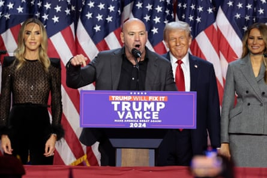

T en years ago – before I became an investigative journalist – I found myself working as a color commentator for a Russian mixed martial arts organization bankrolled by an oligarch deep in Vladimir Putin’s orbit.
The job took me around the Russian Federation and its neighboring states, allowing me to pursue unique stories that would otherwise have been out of my reach. I met a Latvian fighter who escaped a black magic cult run by his coach, attended an MMA show with the president of Ingushetia (now Russia’s deputy minister of defence), and knocked back vodka shots with ex-KGB officers and Russian oligarchs.
Then there was the time the organization attempted to host an event in Moscow’s famed Red Square, one of the most historically and politically significant landmarks in Russia. It also sits adjacent to the Kremlin, the seat of Russia’s political power. The event would have been a chance for the organization and its oligarch to ingratiate themselves to Putin, a known MMA fan who had previously attended their shows.
Logistical issues, including security concerns and layers of bureaucratic red tape, rendered the event impossible at the time. But the incident stuck with me nonetheless as an example of the political undercurrent flowing through the sport. That memory became especially relevant as US president Donald Trump announced plans to host a Ultimate Fighting Championship (UFC) event at the White House to commemorate the nation’s 250th birthday next year.
Speaking to a crowd of supporters during a Salute to America event in Iowa Thursday, Trump said: “Does anybody watch UFC ? The great Dana White? We’re going to have a UFC fight. We’re going to have a UFC fight – think of this – on the grounds of the White House. We have a lot of land there.”
White House press secretary Karoline Leavitt confirmed the news during the press briefing, adding that the president was “dead serious” about hosting a UFC event at the official residence and workplace of the president.
The announcement comes as no surprise given Trump longstanding relationship with the UFC, it current owner Ari Emanuel, and its CEO Dana White.
Over the past few years, Trump has frequently attended UFC events , basking in the admiration of the young, predominantly male crowd. He cultivated relationships with fighters, leveraging their support to portray himself as a symbolic strongman. He embraced the UFC’s culture of defiance, machismo and spectacle to help buttress his image as a rebel against liberal norms. It has also hastened the replacement of America’s conventional political culture with an abrasive new blend of entertainment and confrontational politics, perfectly embodied by both Trump and White.
The UFC CEO stumped for Trump at three Republican National Conventions and a slew of campaign rallies over the past eight years. He traveled with the president on Air Force One and produced a propaganda documentary on Trump entitled Combatant-in-Chief. And when Trump won the 2024 presidential election, it was White who took the stage at his victory party – because, naturally, Trump needed his fight promoter to seal the deal.
For the UFC, its association with Trump has granted the once-renegade promotion a new kind of political legitimacy and influence. It also set it apart from other sports leagues through its unapologetically conservative posture. The UFC is even sponsoring the United States Semiquincentennial dubbed America 250, joining the likes of Amazon, The Coca-Cola Company, Oracle and Walmart.
When Trump won the 2024 presidential election, UFC CEO Dana White took the stage at his victory party in West Palm Beach, Florida.Photograph: Win McNamee/Getty Images
Since taking office in January, Trump has attended two separate UFC events. He most recently attended UFC 316 in June just hours after signing a memo ordering the deployment of 2,000 National Guard troops to Los Angeles County after Ice immigration raids sparked mass protests. He nevertheless enjoyed a standing ovation from the fans in attendance, and glowing endorsements from the fighters, one of whom even kneeled before Trump. UFC champion Kayla Harrison embraced him, planted a kiss on his cheek, and wrapped her championship belt around his waist as his family and supporters looked on in delight. It was a spectacle befitting the strongman Trump imagines himself to be.
Which is why Trump’s plan to stage a UFC event at the White House makes perfect sense. It is the natural climax of a partnership in which the UFC has become the stage for Maga mythology. It carries shades of fascist Italy under Benito Mussolini, particularly its obsession with masculinity, spectacle, and nationalism – but with a modern, American twist.
Fascist Italy used rallies, parades and sports events to project strength and unity. Sports, especially combat sports, were used as tools to cultivate Mussolini’s ideal masculinity and portray Italy as a strong and powerful nation. Similarly, Trump has relied on the UFC to project his tough-guy image, and to celebrate his brand of nationalistic masculinity. From name-dropping champions who endorse him to suggesting a tournament that would pit UFC fighters against illegal migrants , Trump has repeatedly found ways to make UFC-style machismo a part of his political brand.
Since returning to office in January, Trump’s presidency has been marked by a purge of federal agencies, crackdowns on dissent and immigration, and hollowing out institutions once designed as guardrails against abuses in presidential power. Loyalty to Trump, rather than the Constitution and the American people, has become the primary litmus test for political advancement. Meanwhile, sports have emerged as a central feature of his administration , advancing his policies while projecting a cult of personality and the celebration of violence. All of these are the hallmarks of authoritarianism.
There was once a time when the US could point to the authoritarian pageantry of regimes like Mussolini’s Italy and claim at least some moral distance. That line is no longer visible. What was once soft power borrowed from strongmen is now being proudly performed on America’s own front lawn.
- Karim Zidan writes a regular newsletter on the intersection of sports and authoritarian politics.